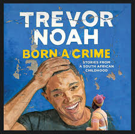

THE ROLE OF POLICE IN TREVOR NOAH
INFLICTING FEAR AMONG PEOPLE

Trevor Noah’s unlikely path from apartheid South Africa to the desk of The Daily Show began with a criminal act: his birth.
Trevor was born to a white Swiss father and a black Xhosa mother at a time when such a union was punishable by five years in prison.
Living proof of his parents’ indiscretion, Trevor was kept mostly indoors for the earliest years of his life,
bound by the extreme and often absurd measures his mother took to hide him from a government that could, at any moment, steal him away.
KIDNAPPING THE COLORED.
Patricia, manage to escape detection,
but he still repeatedly has to be hidden as a child
he cannot meet his father, Robert, or walk with his mother in public
(she often pretends to be his nanny or maid)
He cannot play on the streets with his cousins in Soweto,
lest he be kidnapped by the government and moved to a colored settlement.
CLOSING DOWN BUSINESSES
Robert is forced to shut down his hotel.
He had registered it for both black and whites.
Both colors could use it. The whites were always excited to know blacks eat and so were blacks.
But then after a period of time the police started complain about it.
It had to be closed down or either be used by the whites only.
Robert was white but not a racist that was not funny to him and not fair at all.
They said that Roberts’s hotel was not clean and hygienic,
they started to look for mistake and Robert was not so happy about it.
They so that that was not working and had to look for another solution.
They then told Robert to either close it down or build every race its own toilet.
Robert figured it out and the toilet would just be full of toilets HE decided to close it,
because it made no sense.
MAINTAINING ORDER

When Trevor and Teddy window shop at a supermarket.
The police chase them.
Unfortunately Teddy is arrested and fortunately Trevor is able to to escape.
This is because he knows all the shortcuts and all the corners of the neighborhood,
hence he is not arrested by the police.
He was also a fast runner from his early childhood.